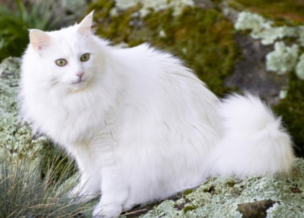
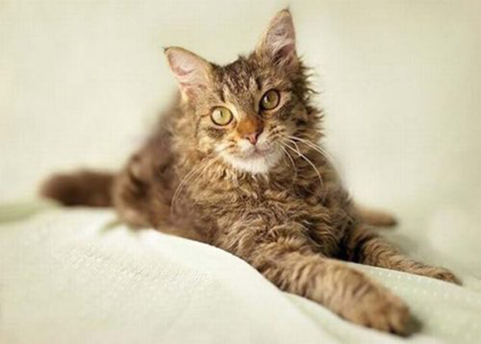
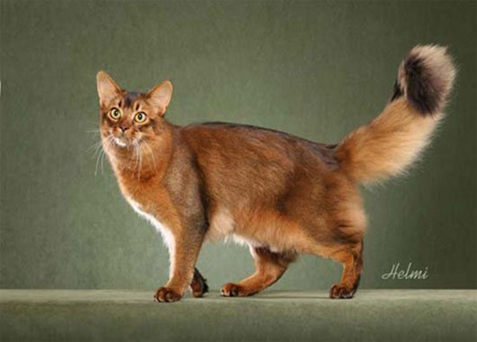

Chào mừng đến với Thế Giới Của Những Người Yêu Mèo!
Trang Giới Thiệu là nơi bạn sẽ khám phá về thế giới động vật kỳ diệu của chúng ta.
Chúng ta sẽ tìm hiểu về nguồn gốc và lịch sử của mèo, cũng như những đặc điểm và tính cách độc đáo mà chúng mang lại.
Hãy cùng nhau đắm chìm trong thế giới tuyệt vời của những người bạn bốn chân này.

Đa Dạng Và Đẹp Đẽ: Các Giống Mèo Trên Thế Giới
Trang Giống Mèo sẽ giới thiệu về các giống mèo phổ biến và độc đáo trên khắp thế giới.
Bạn sẽ được biết đến về các đặc điểm ngoại hình, tính cách, và câu chuyện lịch sử của từng giống.
Hãy khám phá sự đa dạng tuyệt vời của thế giới mèo.



Thư Viện Mèo Tuyệt Vời
Trang Thư Viện là nơi bạn có thể thưởng thức những bức ảnh đẹp như tranh của mèo từ cộng đồng yêu mèo.
Bạn sẽ được ngắm nhìn những khoảnh khắc dễ thương, hài hước, và đôi khi là bí ẩn của những chú mèo dễ thương.
Hãy để tâm hồn bạn được thư giãn với bộ sưu tập hình ảnh này.
Liên Lạc Với Chúng Tôi
Trang Liên Hệ là nơi bạn có thể chia sẻ ý kiến, đề xuất, và nếu có bất kỳ câu hỏi nào, hãy liên hệ trực tiếp với chúng tôi.
Chúng tôi luôn mở đón nhận định và hợp tác từ cộng đồng yêu mèo. Đừng ngần ngại chia sẻ tình yêu của bạn với chúng tôi!